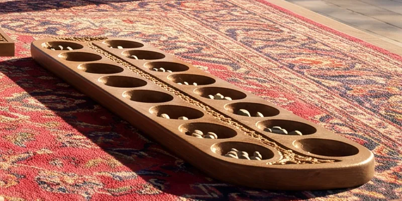

Toguz korgool, nine pebbles
The steppe game of two rows of nine holes: counting, reckoning, and one trap hole, the tuzdyk.

In Kyrgyz toguz korgool means “nine droppings”; in Kazakh the game is togyz kumalak. It is a branch of the great mancala family, the sowing games known from Africa to South-East Asia.
How old it is
Nobody knows. The first records come from Russian ethnographers in the Kazakh steppe in the nineteenth century, and the Kazakh scholar Sarsen Amanzholov described the rules in detail in 1936. So we do not claim it was played under Timur: it is the game of Samarkand’s steppe neighbours, not of the court.
How it is played
Each side has nine holes of nine stones, 162 in all. A move lifts every stone from one of your holes and sows them one by one anticlockwise, starting in the same hole. If the last stone makes the count in an enemy hole even, those stones go into your kazan, your “cauldron”.
If the count becomes exactly three, the hole can turn into a tuzdyk: whatever falls into it for the rest of the game belongs to its owner. There is one tuzdyk a game; it cannot be made in the opponent’s ninth hole or facing the opponent’s own tuzdyk. Whoever gathers more than half, 82 stones, wins.
Today
The game has federations and world championships and is part of the World Nomad Games. In 2020 toguz korgool, Kazakh togyz kumalak and Turkish mangala were inscribed together on UNESCO’s list of intangible cultural heritage.